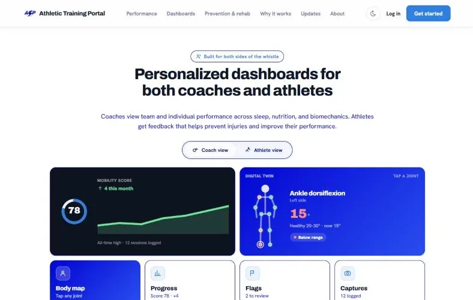
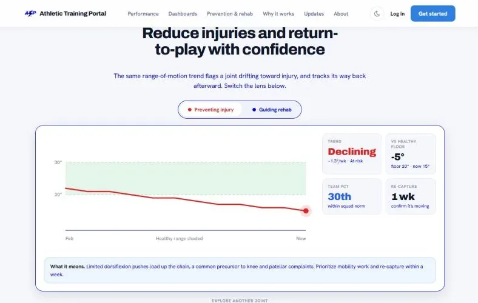
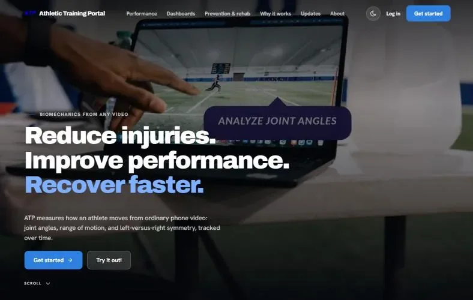
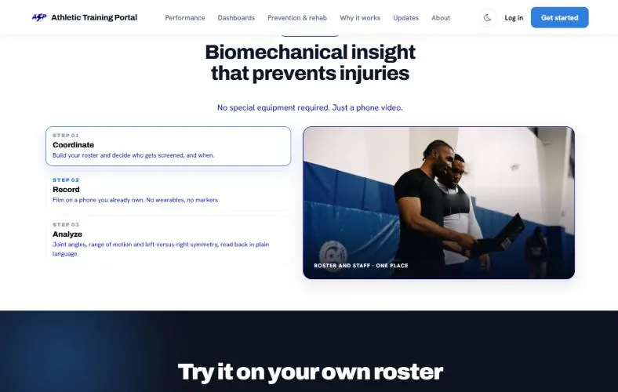
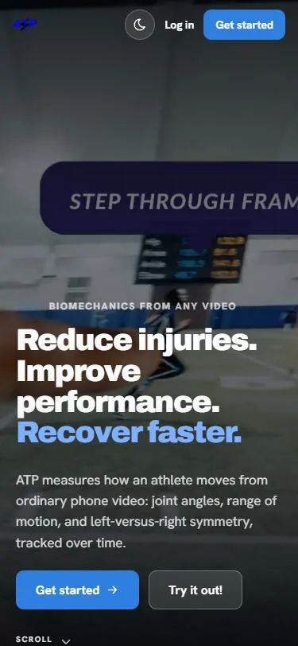

The problem
One set of data, very different users. Young athletes want something engaging on their phone. Coaches need the full picture but don't always love technology.
Video to skeleton
Raw video next to the tracked skeleton, so people can see the tracking is right before they trust the numbers.
Design decisions
Coaches see who needs attention first
Every number sits against a healthy range, in plain language
Athletes get one score and a body they can tap
Screens





Real-time overlays
I built the overlay system in Python with OpenCV. It started at 7 FPS. I got it past 60.
Results
$50K grant and NCAA Division I pilots at Duke and North Carolina Central University.